import pandas as pd
import numpy as np
import seaborn as sns
pd.set_option('display.max_columns', None)Session 14: Clustering
Clustering
k-means
Segmentation
PCA
Learning objectives
- Segmentation
- Clustering
- K-means
- Hierarchical
- DBSCAN
- Distance Metrics
- Euclidean
- Manhattan
- Pearson Correlation
- Evaluation Metrics
- Elbow Method
- Silhouette analysis
- Case Study
Customer Segmentation
Customer segmentation can be defined as the practice of dividing a customer base into groups of individuals that are similar in specific ways relevant to Marketing
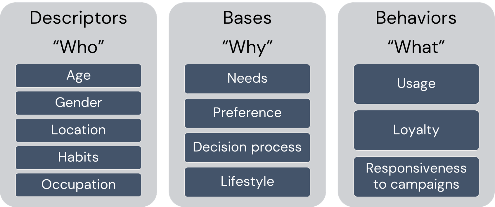
Why Segment Customers?
In one word: for differentiation!
- Marketing and Service:
- Make more focused/targeted marketing
- Identify the most profitable and at-risk customers
- Build relationships
- Create user personas
- Pruduct and Brand:
- Brand to appeal to particular segments
- Customize products and services
- Predict future purchasing patterns
- Pricing:
- Pricing products by groups
- Determine Willingness to pay for optimal value
Important
There are number of ways for the customer segmentation, here we are going to do one using Clustering algorithms.
Clustering
Customer segmentation can be achieved by using ML unsupervised learning algorithms
Unsupervised learning: No target variable, the goal is to discover patterns in data.
We are not going to discuss detailed technical aspects of the algorithms in the scope of the course, however the intuition and some evaluation metrics will be covered.
Apart from Customer Segmentation, the clustering algorithms are also used in:
- Dimensionality Reduction
- Feature Generation
- Recommendation
- Splitting Supervised ML algorithms
Clustering Algorithms are based on
geometrical distances
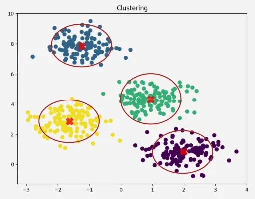
Similarity and Distance
High level idea of clustering is to identify closest points. “The closeness” can be measured by number of distance metrics.
Those Distances could be in different types. The mose popular ones are:
- Euclidean Distance
- Manhattan Distance
- Pearson Correlation Distance
Euclidean distance
\[d_{euc}(x,y)=\sqrt{\sum_{i-1}^n(x_i-y_i)^2}\]
Manhattan distance
\[d_{man}(x,y)=\sum_{i-1}^n|x_i-y_i|\]
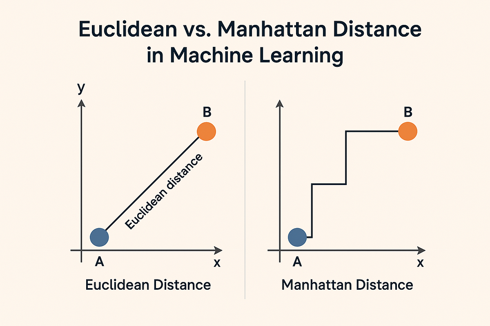
Pearson correlation distance:
\[d_{p.corr}(x,y)=1-\frac{\sum_{i-1}^n(x_i-\bar x)(y_i-\bar y)}{\sqrt{\sum_{i-1}^n(x_i-\bar x)^2 \sum_{i-1}^n(y_i-\bar y)^2 }}\]
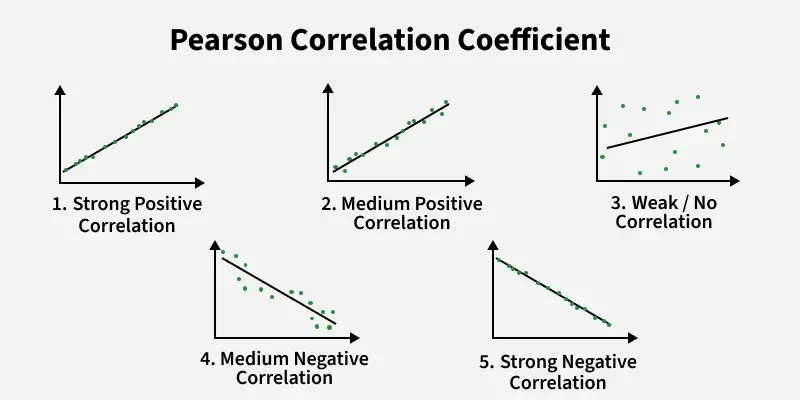
Performance of Clustering Algorithms
There are 2 main groups of evaluation metrics:
- External Measures: comparing with the ground truth labels
Accuracy:\(acc(y,\hat y)=\frac{1}{n}\sum_{i=1}^{n-1}(\hat y_i=y_i)\)Homogeneity:A homogeneous clustering is one where each cluster has samples belonging the same class labels \(h=\frac{H(C/k)}{H(C)}\)Completeness:A complete clustering is one where all samples belonging to the same class as grouped into the same cluster \(c=\frac{H(K/C)}{H(K)}\)V-Measure:the harmonic mean between homogeneity and completeness: \(2\frac{hc}{h+c}\)
- Internal Measures:
qualityof separation based on geometrical properties:- Elbow Method
- Silhouette Coefficient
Cohesion: measures the distance of a point from the rest of the points within the cluster
Separation: measures the distance of point from cluster to the all points from other clusters
Clustering Set-Up
Problem set-up:
- Result: assignment to clusters
- Predictors: numerical and categorical
As mentioned there are lots of clustering algorithms, in the scope of the program we are going to work with K-Means Clustering.
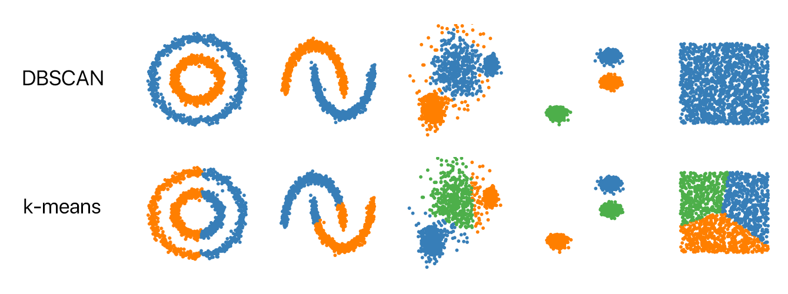
K-Means Clustering
The most famous clustering algorithm.
Problem set-up:
- Result: assignment to clusters (each observation to a single cluster)
- Predictors: numerical
- Pre-specified number of clusters!
Goal
Minimizing total within-cluster Euclidean distances:
\[W(C_k)=\sum_{x_i \in C_k}(x_i-\mu_k)^2\] \[minimize(\sum_{k=1}^k W(C_k))\]
K-Means Steps
- Choose the number \(K\) of clusters.
- Select at random \(K\) points, the centroids, not necessarily from your data.
- Assign each data point to the closest centroid.
- Compute and place the new centroid of each cluster.
- Reassign each data point to the new closest centroid. If any assignment took place, go to step 4; otherwise, finish.

Checkout also the graphical explanation of the KMeans clustering below
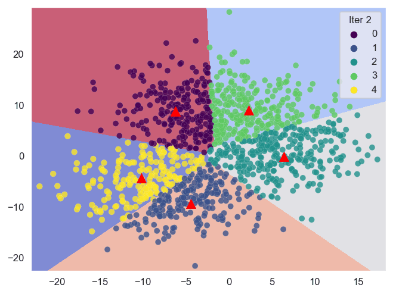
With Fake Data
Fake Data
Let’s use make_blobs to create a 200 samples, of two classes with 3 centers
import matplotlib.pyplot as plt
from sklearn.datasets import make_blobs
X, Y = make_blobs(n_samples=200, n_features=2, centers=3,
cluster_std=1, shuffle=True, random_state=7)plt.scatter(X[:, 0], X[:, 1], marker='o', s=70)
plt.show()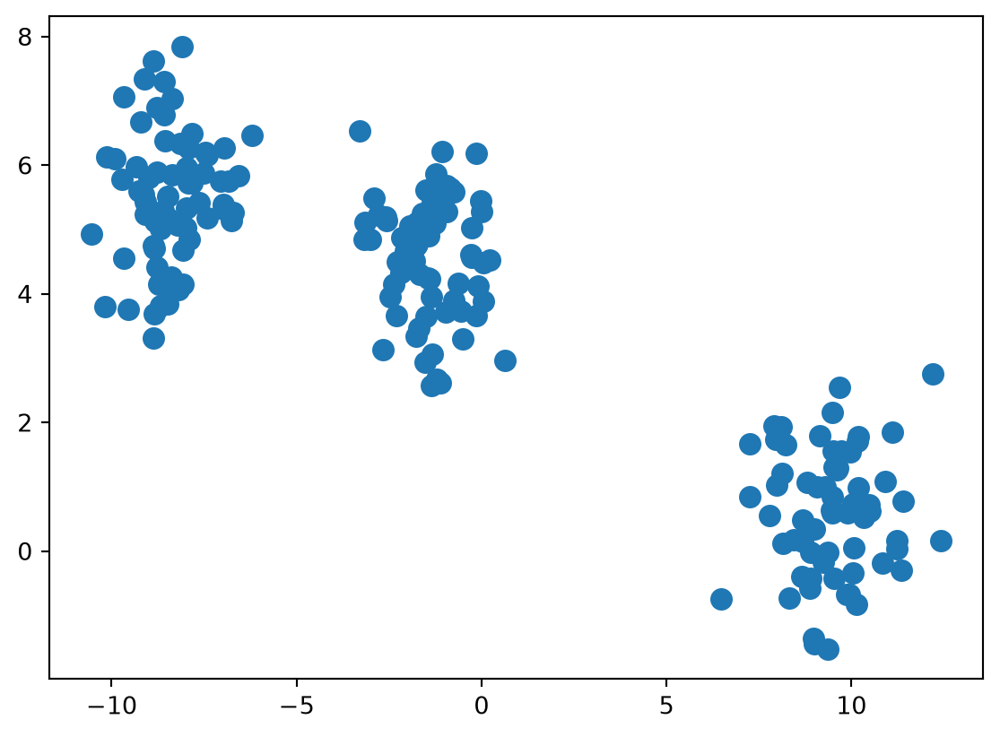
K-Means Fit
from sklearn.cluster import KMeans
km = KMeans(n_clusters=3, max_iter=500)
y_km = km.fit_predict(X)# plot the 3 clusters
plt.scatter(X[y_km == 0, 0], X[y_km == 0, 1], c='lightgreen', label='cluster 1')
plt.scatter(X[y_km == 1, 0], X[y_km == 1, 1], c='orange', label='cluster 2')
plt.scatter(X[y_km == 2, 0], X[y_km == 2, 1], c='lightblue', label='cluster 3')
# plot the centroids
plt.scatter(km.cluster_centers_[:, 0], km.cluster_centers_[:, 1],
s=250, marker='*',c='red', edgecolor='black',label='centroids')
plt.legend(scatterpoints=1)
plt.grid()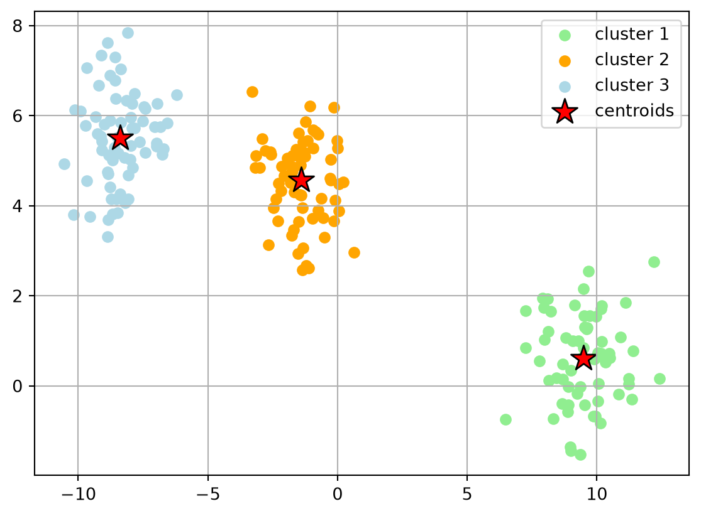
Optimal Number of Clusters
How to find out the optimal number of clusters, when there is no ground truth?
The only option is to use geometric properties of cluster:
- Elbow method: Running the algorithm multiple times over a loop, with an increasing number of cluster choice and then plotting a
*clustering score*as a function of the number of clusters. The point with Elbow like shape will show the optimal number of cluster. - Silhouette Analysis: the normalized average distance between points.
In the scope of segmentation, we are going to observe only those metrics.
Elbow Method
Sum_of_squared_distances = []
K = range(2,15)
for k in K:
km = KMeans(n_clusters=k, init='random', n_init=10, max_iter=500, tol=1e-04, random_state=0)
km = km.fit(X)
Sum_of_squared_distances.append(km.inertia_)
# Plot Results
plt.plot(K, Sum_of_squared_distances, marker='o')
plt.xlabel('k')
plt.ylabel('Sum_of_squared_distances')
plt.title('Elbow Method For Optimal k')
plt.show()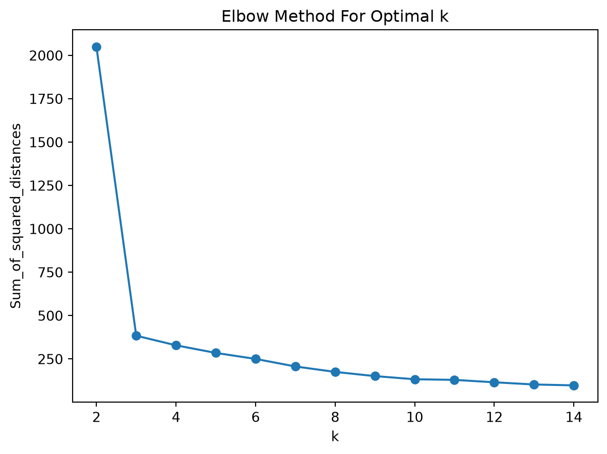
Silhouette Analysis
Clusters could be evaluated based on similarity or dissimilarity measure such as the distance between cluster point.
Silhouette Coefficient:
\[s=\frac{b-a}{max(a,b)}; [-1,1]\]
where:
- \(a:\) the average distance from a point to other points within a cluster (intra-cluster)
- \(b:\) the average distance from a point to the other closest cluster (extra-cluster)
when:
- \(s=-1:\) misclassified
- \(s=0:\) there is no difference between clusters
- \(s=1:\) ideal split
Selecting the one which has the highest average silhouette score:
from sklearn.metrics import silhouette_score
for n_clusters in range(2,10):
clusterer = KMeans(n_clusters=n_clusters, random_state=10)
cluster_labels = clusterer.fit_predict(X)
silhouette_avg = silhouette_score(X, cluster_labels)
print("For n_clusters =", n_clusters,
"The average silhouette_score is: {:4f}".format(silhouette_avg))For n_clusters = 2 The average silhouette_score is: 0.748643
For n_clusters = 3 The average silhouette_score is: 0.785358
For n_clusters = 4 The average silhouette_score is: 0.641820
For n_clusters = 5 The average silhouette_score is: 0.461010
For n_clusters = 6 The average silhouette_score is: 0.477107
For n_clusters = 7 The average silhouette_score is: 0.325233
For n_clusters = 8 The average silhouette_score is: 0.478205
For n_clusters = 9 The average silhouette_score is: 0.361148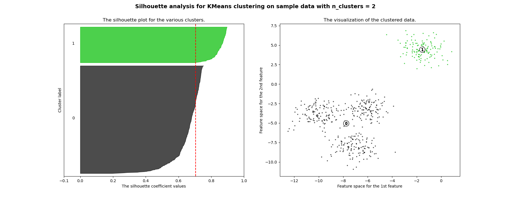
Tip
For more information you can visit here.
Other Clusering Methods
Hierarchical Clustering
- Agglomerative (bottom-up): each observation starts as . Based on the distance of those clusters (in this case observations) it will merge into one cluster.
- Divisive (Top-Bottom): starts at the top with The cluster will be partitioned at a point where it splits the big cluster into two big ones. This will get to a point where the observations cannot be split any more since each observation becomes its own cluster.
Steps
- Make each data point a single point cluster (forms \(N\) cluster)
- Take the 2 closes data point and make them 1 cluster (forms \(N-1\))
- Take the 2 closest clusters and make them 1 cluster (\(N-2\) clusters)
- Repeat step 3 until there is only 1 cluster
- Finish
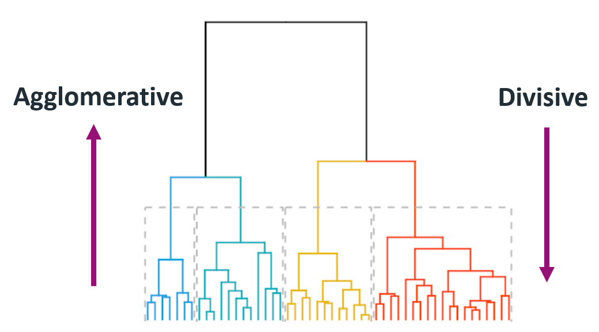
Intuition
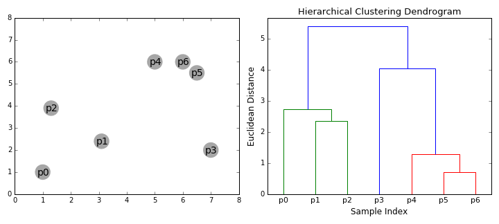
DBSCAN
DBSCAN: Density Based Spatial Clustering of Applications with Noise.
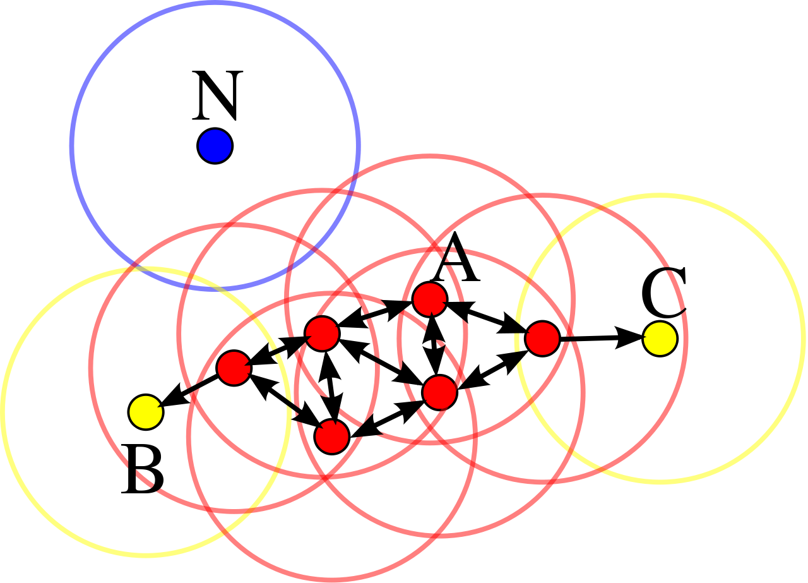
How it works?
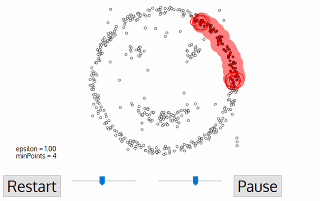
Components:
- \(\pmb{\epsilon:}\) indicates the radius of circular points
- considering minimum points within the \({\epsilon}\)
- In case of availability at least Min points, that point will be considered as Core Point
- In case of availability at least one core point within the radios of epsilon
- none of the above conditions are met
The algorithm works in a following way:
- Select a random starting point: p
- Finding Epsilon neighborhood of point p
- if it turns out core point, then cluster is formed
- if it is a border point, search other points, until all points in data are processed
Case Study
Clusering Travel Agency Booking Data
Our Goal is to find Customer Segments in order to help Marketing Team to target them more effectively!
Downloading The Data
df = pd.read_csv('https://raw.githubusercontent.com/hovhannisyan91/data_analytics_with_python/refs/heads/main/data/clustering/travel.csv',
parse_dates = ['date_time','srch_ci','srch_co'])
df.head()| date_time | site_name | posa_continent | user_location_country | user_location_region | user_location_city | orig_destination_distance | user_id | is_mobile | is_package | channel | srch_ci | srch_co | srch_adults_cnt | srch_children_cnt | srch_rm_cnt | srch_destination_id | srch_destination_type_id | is_booking | cnt | hotel_continent | hotel_country | hotel_market | hotel_cluster | |
|---|---|---|---|---|---|---|---|---|---|---|---|---|---|---|---|---|---|---|---|---|---|---|---|---|
| 0 | 2014-11-03 16:02:00 | 24 | 2 | 77 | 871 | 36643 | 456.1151 | 792280 | 0 | 1 | 1 | 2014-12-15 | 2014-12-19 | 2 | 0 | 1 | 8286 | 1 | 0 | 1 | 0 | 63 | 1258 | 68 |
| 1 | 2013-03-13 19:25:00 | 11 | 3 | 205 | 135 | 38749 | 232.4737 | 961995 | 0 | 0 | 9 | 2013-03-13 | 2013-03-14 | 2 | 0 | 1 | 1842 | 3 | 0 | 1 | 2 | 198 | 786 | 37 |
| 2 | 2014-10-13 13:20:00 | 2 | 3 | 66 | 314 | 48562 | 4468.2720 | 495669 | 0 | 1 | 9 | 2015-04-03 | 2015-04-10 | 2 | 0 | 1 | 8746 | 1 | 0 | 1 | 6 | 105 | 29 | 22 |
| 3 | 2013-11-05 10:40:00 | 11 | 3 | 205 | 411 | 52752 | 171.6021 | 106611 | 0 | 0 | 0 | 2013-11-07 | 2013-11-08 | 2 | 0 | 1 | 6210 | 3 | 1 | 1 | 2 | 198 | 1234 | 42 |
| 4 | 2014-06-10 13:34:00 | 2 | 3 | 66 | 174 | 50644 | NaN | 596177 | 0 | 0 | 9 | 2014-08-03 | 2014-08-08 | 2 | 1 | 1 | 12812 | 5 | 0 | 1 | 2 | 50 | 368 | 83 |
Save
Do not forget to save the dataframe as csv
df.to_csv('../data/travel.csv')Feature Descritpion
| Column Name | Description | Data Type |
|---|---|---|
| date_time | Timestamp | string |
| site_name | ID of the Expedia point of sale | int |
| posa_continent | ID of continent associated with site_name |
int |
| user_location_country | ID of the country the customer is located in | int |
| user_location_region | ID of the region the customer is located in | int |
| user_location_city | ID of the city the customer is located in | int |
| orig_destination_distance | Physical distance between a hotel and a customer at the time of search | double |
| user_id | ID of user | int |
| is_mobile | 1 when a user connected from a mobile device, 0 otherwise | tinyint |
| is_package | 1 if the click/booking was generated as part of a package, 0 otherwise | int |
| channel | ID of a marketing channel | int |
| srch_ci | Check-in date | string |
| srch_co | Check-out date | string |
| srch_adults_cnt | Number of adults specified in the hotel room | int |
| srch_children_cnt | Number of children specified in the hotel room | int |
| srch_rm_cnt | Number of hotel rooms specified in the search | int |
| srch_destination_id | ID of the destination where the hotel search was performed | int |
| srch_destination_type_id | Type of destination | int |
| hotel_continent | Hotel continent | int |
| hotel_country | Hotel country | int |
| hotel_market | Hotel market | int |
| cnt | Number of similar events in the context of the same user session | tinyint |
| hotel_cluster | ID of a hotel cluster | bigint |
| is_booking | 1 if a booking, 0 if a click. This is what we are predicting | int |
Dataframe Size
# Get some base information on our dataset
print ("Rows: " , df.shape[0])
print ("Columns: " , df.shape[1])Rows: 100000
Columns: 24Information About df
df.info()<class 'pandas.DataFrame'>
RangeIndex: 100000 entries, 0 to 99999
Data columns (total 24 columns):
# Column Non-Null Count Dtype
--- ------ -------------- -----
0 date_time 100000 non-null datetime64[us]
1 site_name 100000 non-null int64
2 posa_continent 100000 non-null int64
3 user_location_country 100000 non-null int64
4 user_location_region 100000 non-null int64
5 user_location_city 100000 non-null int64
6 orig_destination_distance 63915 non-null float64
7 user_id 100000 non-null int64
8 is_mobile 100000 non-null int64
9 is_package 100000 non-null int64
10 channel 100000 non-null int64
11 srch_ci 99878 non-null datetime64[us]
12 srch_co 99878 non-null datetime64[us]
13 srch_adults_cnt 100000 non-null int64
14 srch_children_cnt 100000 non-null int64
15 srch_rm_cnt 100000 non-null int64
16 srch_destination_id 100000 non-null int64
17 srch_destination_type_id 100000 non-null int64
18 is_booking 100000 non-null int64
19 cnt 100000 non-null int64
20 hotel_continent 100000 non-null int64
21 hotel_country 100000 non-null int64
22 hotel_market 100000 non-null int64
23 hotel_cluster 100000 non-null int64
dtypes: datetime64[us](3), float64(1), int64(20)
memory usage: 18.3 MBMissing Values
As we can see orig_destination_distance column has large amount of missing values. Taking into account, that we cannot infer anything from other features, we will simply remove the feature from further analysis.
# Get statistics for our Numerical Columns
df.isnull().sum()date_time 0
site_name 0
posa_continent 0
user_location_country 0
user_location_region 0
user_location_city 0
orig_destination_distance 36085
user_id 0
is_mobile 0
is_package 0
channel 0
srch_ci 122
srch_co 122
srch_adults_cnt 0
srch_children_cnt 0
srch_rm_cnt 0
srch_destination_id 0
srch_destination_type_id 0
is_booking 0
cnt 0
hotel_continent 0
hotel_country 0
hotel_market 0
hotel_cluster 0
dtype: int64Correlation Matrix
Let’s see whic features are correlated. First we should build corr object and then visualize using heatmap from seaborn.
What could you infer?
# Create our Corelation Matrix
corr = df.corr()
corr| date_time | site_name | posa_continent | user_location_country | user_location_region | user_location_city | orig_destination_distance | user_id | is_mobile | is_package | channel | srch_ci | srch_co | srch_adults_cnt | srch_children_cnt | srch_rm_cnt | srch_destination_id | srch_destination_type_id | is_booking | cnt | hotel_continent | hotel_country | hotel_market | hotel_cluster | |
|---|---|---|---|---|---|---|---|---|---|---|---|---|---|---|---|---|---|---|---|---|---|---|---|---|
| date_time | 1.000000 | -0.024018 | -0.010503 | -0.021281 | -0.012536 | -0.004335 | -0.002967 | -0.017718 | 0.023642 | -0.001773 | -0.059976 | 0.952221 | 0.951117 | 0.013011 | -0.075139 | -0.004368 | 0.011650 | -0.040562 | -0.032699 | -0.089140 | -0.008460 | -0.005722 | 0.003028 | -0.000059 |
| site_name | -0.024018 | 1.000000 | -0.637743 | 0.159283 | 0.130818 | -0.013471 | 0.027609 | 0.030404 | -0.005418 | 0.048820 | -0.027780 | -0.001569 | -0.001054 | -0.013405 | -0.031962 | 0.016585 | 0.034895 | -0.006934 | -0.013460 | 0.022274 | 0.201760 | 0.263167 | -0.068316 | -0.026689 |
| posa_continent | -0.010503 | -0.637743 | 1.000000 | 0.179726 | -0.034647 | 0.039227 | 0.049808 | -0.015209 | 0.016331 | -0.093459 | 0.089680 | -0.026851 | -0.027669 | 0.012350 | 0.034453 | -0.033712 | -0.015535 | 0.037172 | 0.013319 | -0.018952 | -0.333578 | -0.156578 | 0.049214 | 0.018297 |
| user_location_country | -0.021281 | 0.159283 | 0.179726 | 1.000000 | 0.058496 | 0.122686 | 0.047689 | -0.021091 | 0.003728 | -0.025284 | 0.109999 | -0.020851 | -0.020539 | 0.042526 | 0.037101 | 0.000858 | 0.013486 | 0.028888 | 0.001284 | 0.003539 | -0.063744 | 0.097624 | 0.015569 | -0.011876 |
| user_location_region | -0.012536 | 0.130818 | -0.034647 | 0.058496 | 1.000000 | 0.132457 | 0.136560 | 0.002225 | 0.016982 | 0.040482 | -0.001600 | 0.009723 | 0.010378 | 0.005487 | 0.014009 | 0.000254 | 0.022567 | 0.001376 | 0.000253 | -0.007570 | 0.043027 | -0.050301 | 0.040367 | 0.004984 |
| user_location_city | -0.004335 | -0.013471 | 0.039227 | 0.122686 | 0.132457 | 1.000000 | 0.014178 | -0.007989 | -0.003741 | 0.013032 | 0.023497 | -0.004184 | -0.003894 | 0.006628 | 0.002638 | -0.000694 | 0.000786 | -0.004399 | -0.002655 | -0.002175 | 0.007759 | -0.001987 | 0.008558 | 0.000102 |
| orig_destination_distance | -0.002967 | 0.027609 | 0.049808 | 0.047689 | 0.136560 | 0.014178 | 1.000000 | 0.017015 | -0.059464 | 0.041991 | -0.000398 | 0.080935 | 0.083821 | -0.024039 | -0.059722 | -0.012484 | -0.036314 | -0.042859 | -0.033480 | 0.009483 | 0.416180 | 0.254321 | -0.090112 | 0.003624 |
| user_id | -0.017718 | 0.030404 | -0.015209 | -0.021091 | 0.002225 | -0.007989 | 0.017015 | 1.000000 | -0.011439 | -0.018901 | -0.003593 | -0.014944 | -0.014900 | -0.007370 | 0.002983 | -0.001625 | 0.002716 | 0.007133 | 0.001561 | 0.001355 | 0.002447 | 0.008707 | -0.002463 | 0.003202 |
| is_mobile | 0.023642 | -0.005418 | 0.016331 | 0.003728 | 0.016982 | -0.003741 | -0.059464 | -0.011439 | 1.000000 | 0.046903 | -0.030770 | 0.024625 | 0.024727 | 0.016661 | 0.018211 | -0.022565 | -0.007140 | -0.016039 | -0.028623 | 0.008084 | -0.024144 | -0.029574 | 0.007644 | 0.012145 |
| is_package | -0.001773 | 0.048820 | -0.093459 | -0.025284 | 0.040482 | 0.013032 | 0.041991 | -0.018901 | 0.046903 | 1.000000 | -0.011269 | 0.057690 | 0.061811 | -0.024097 | -0.037673 | -0.036653 | -0.146647 | -0.224422 | -0.081307 | 0.126500 | 0.108993 | -0.044426 | -0.014636 | 0.031399 |
| channel | -0.059976 | -0.027780 | 0.089680 | 0.109999 | -0.001600 | 0.023497 | -0.000398 | -0.003593 | -0.030770 | -0.011269 | 1.000000 | -0.071740 | -0.071888 | -0.014931 | 0.004202 | 0.010191 | -0.000392 | 0.021612 | 0.025697 | -0.010248 | -0.022241 | -0.001217 | 0.006164 | 0.002596 |
| srch_ci | 0.952221 | -0.001569 | -0.026851 | -0.020851 | 0.009723 | -0.004184 | 0.080935 | -0.014944 | 0.024625 | 0.057690 | -0.071740 | 1.000000 | 0.999897 | 0.042944 | -0.054173 | 0.002106 | -0.002510 | -0.055652 | -0.057114 | -0.077000 | 0.029544 | 0.002502 | -0.003590 | 0.008987 |
| srch_co | 0.951117 | -0.001054 | -0.027669 | -0.020539 | 0.010378 | -0.003894 | 0.083821 | -0.014900 | 0.024727 | 0.061811 | -0.071888 | 0.999897 | 1.000000 | 0.043023 | -0.053617 | 0.001894 | -0.003656 | -0.056945 | -0.058378 | -0.076339 | 0.030990 | 0.002533 | -0.003720 | 0.009516 |
| srch_adults_cnt | 0.013011 | -0.013405 | 0.012350 | 0.042526 | 0.005487 | 0.006628 | -0.024039 | -0.007370 | 0.016661 | -0.024097 | -0.014931 | 0.042944 | 0.043023 | 1.000000 | 0.107061 | 0.525970 | 0.005651 | -0.012119 | -0.046350 | 0.014024 | -0.019355 | -0.018169 | 0.010203 | 0.006482 |
| srch_children_cnt | -0.075139 | -0.031962 | 0.034453 | 0.037101 | 0.014009 | 0.002638 | -0.059722 | 0.002983 | 0.018211 | -0.037673 | 0.004202 | -0.054173 | -0.053617 | 0.107061 | 1.000000 | 0.091711 | -0.008784 | -0.007217 | -0.023228 | 0.019242 | -0.061707 | -0.045921 | 0.005056 | 0.021477 |
| srch_rm_cnt | -0.004368 | 0.016585 | -0.033712 | 0.000858 | 0.000254 | -0.000694 | -0.012484 | -0.001625 | -0.022565 | -0.036653 | 0.010191 | 0.002106 | 0.001894 | 0.525970 | 0.091711 | 1.000000 | 0.018139 | 0.013618 | 0.009454 | -0.000487 | 0.019150 | 0.011055 | 0.000104 | -0.012177 |
| srch_destination_id | 0.011650 | 0.034895 | -0.015535 | 0.013486 | 0.022567 | 0.000786 | -0.036314 | 0.002716 | -0.007140 | -0.146647 | -0.000392 | -0.002510 | -0.003656 | 0.005651 | -0.008784 | 0.018139 | 1.000000 | 0.435605 | 0.027674 | -0.021947 | 0.030365 | 0.053862 | 0.081240 | -0.010406 |
| srch_destination_type_id | -0.040562 | -0.006934 | 0.037172 | 0.028888 | 0.001376 | -0.004399 | -0.042859 | 0.007133 | -0.016039 | -0.224422 | 0.021612 | -0.055652 | -0.056945 | -0.012119 | -0.007217 | 0.013618 | 0.435605 | 1.000000 | 0.037398 | -0.024544 | -0.035655 | -0.021522 | 0.035783 | -0.033039 |
| is_booking | -0.032699 | -0.013460 | 0.013319 | 0.001284 | 0.000253 | -0.002655 | -0.033480 | 0.001561 | -0.028623 | -0.081307 | 0.025697 | -0.057114 | -0.058378 | -0.046350 | -0.023228 | 0.009454 | 0.027674 | 0.037398 | 1.000000 | -0.108628 | -0.025629 | -0.004763 | 0.012633 | -0.018192 |
| cnt | -0.089140 | 0.022274 | -0.018952 | 0.003539 | -0.007570 | -0.002175 | 0.009483 | 0.001355 | 0.008084 | 0.126500 | -0.010248 | -0.077000 | -0.076339 | 0.014024 | 0.019242 | -0.000487 | -0.021947 | -0.024544 | -0.108628 | 1.000000 | 0.020670 | 0.001443 | -0.008747 | -0.000607 |
| hotel_continent | -0.008460 | 0.201760 | -0.333578 | -0.063744 | 0.043027 | 0.007759 | 0.416180 | 0.002447 | -0.024144 | 0.108993 | -0.022241 | 0.029544 | 0.030990 | -0.019355 | -0.061707 | 0.019150 | 0.030365 | -0.035655 | -0.025629 | 0.020670 | 1.000000 | 0.295991 | -0.096278 | -0.015632 |
| hotel_country | -0.005722 | 0.263167 | -0.156578 | 0.097624 | -0.050301 | -0.001987 | 0.254321 | 0.008707 | -0.029574 | -0.044426 | -0.001217 | 0.002502 | 0.002533 | -0.018169 | -0.045921 | 0.011055 | 0.053862 | -0.021522 | -0.004763 | 0.001443 | 0.295991 | 1.000000 | 0.017868 | -0.025002 |
| hotel_market | 0.003028 | -0.068316 | 0.049214 | 0.015569 | 0.040367 | 0.008558 | -0.090112 | -0.002463 | 0.007644 | -0.014636 | 0.006164 | -0.003590 | -0.003720 | 0.010203 | 0.005056 | 0.000104 | 0.081240 | 0.035783 | 0.012633 | -0.008747 | -0.096278 | 0.017868 | 1.000000 | 0.037060 |
| hotel_cluster | -0.000059 | -0.026689 | 0.018297 | -0.011876 | 0.004984 | 0.000102 | 0.003624 | 0.003202 | 0.012145 | 0.031399 | 0.002596 | 0.008987 | 0.009516 | 0.006482 | 0.021477 | -0.012177 | -0.010406 | -0.033039 | -0.018192 | -0.000607 | -0.015632 | -0.025002 | 0.037060 | 1.000000 |
plt.figure(figsize = (10,10))
sns.heatmap(corr,xticklabels=corr.columns.values,
yticklabels=corr.columns.values,vmax=.3, center=0, square=True, linewidths=.5, cbar_kws={"shrink": .82})
plt.title('Heatmap of Correlation Matrix')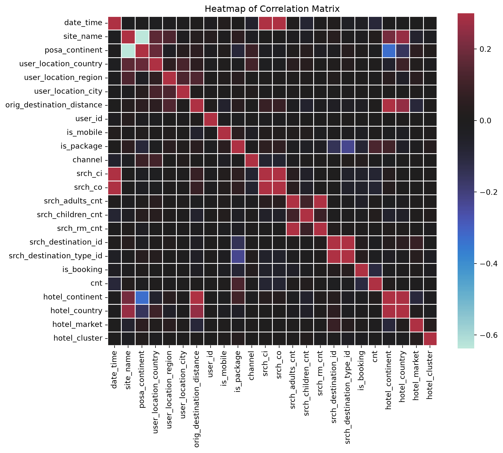
Distributions
What could you say about this?
df[['channel', 'is_booking', 'is_mobile', 'orig_destination_distance',
'srch_rm_cnt', 'srch_adults_cnt', 'srch_children_cnt']].hist(figsize=(10,12))array([[<Axes: title={'center': 'channel'}>,
<Axes: title={'center': 'is_booking'}>,
<Axes: title={'center': 'is_mobile'}>],
[<Axes: title={'center': 'orig_destination_distance'}>,
<Axes: title={'center': 'srch_rm_cnt'}>,
<Axes: title={'center': 'srch_adults_cnt'}>],
[<Axes: title={'center': 'srch_children_cnt'}>, <Axes: >,
<Axes: >]], dtype=object)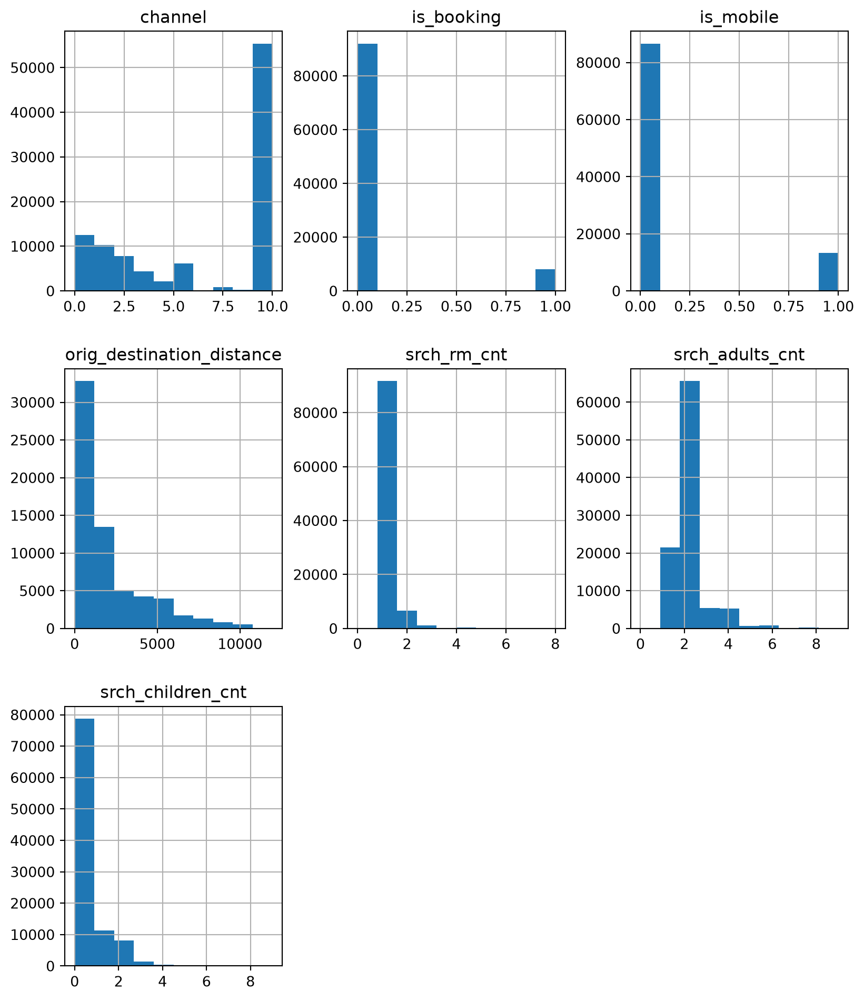
is_booking
# To view the bookings made per user
booking_count_per_user=df.groupby('user_id')['is_booking'].agg(num_of_bookings='count').reset_index()
booking_count_per_user.groupby('num_of_bookings')['user_id'].agg('count')num_of_bookings
1 79189
2 8423
3 1065
4 161
5 24
6 1
Name: user_id, dtype: int64Merge with the Original Data
df = df.merge(df.groupby('user_id')['is_booking'].agg(['count']).reset_index())
df.head()| date_time | site_name | posa_continent | user_location_country | user_location_region | user_location_city | orig_destination_distance | user_id | is_mobile | is_package | channel | srch_ci | srch_co | srch_adults_cnt | srch_children_cnt | srch_rm_cnt | srch_destination_id | srch_destination_type_id | is_booking | cnt | hotel_continent | hotel_country | hotel_market | hotel_cluster | count | |
|---|---|---|---|---|---|---|---|---|---|---|---|---|---|---|---|---|---|---|---|---|---|---|---|---|---|
| 0 | 2014-11-03 16:02:00 | 24 | 2 | 77 | 871 | 36643 | 456.1151 | 792280 | 0 | 1 | 1 | 2014-12-15 | 2014-12-19 | 2 | 0 | 1 | 8286 | 1 | 0 | 1 | 0 | 63 | 1258 | 68 | 2 |
| 1 | 2013-03-13 19:25:00 | 11 | 3 | 205 | 135 | 38749 | 232.4737 | 961995 | 0 | 0 | 9 | 2013-03-13 | 2013-03-14 | 2 | 0 | 1 | 1842 | 3 | 0 | 1 | 2 | 198 | 786 | 37 | 1 |
| 2 | 2014-10-13 13:20:00 | 2 | 3 | 66 | 314 | 48562 | 4468.2720 | 495669 | 0 | 1 | 9 | 2015-04-03 | 2015-04-10 | 2 | 0 | 1 | 8746 | 1 | 0 | 1 | 6 | 105 | 29 | 22 | 1 |
| 3 | 2013-11-05 10:40:00 | 11 | 3 | 205 | 411 | 52752 | 171.6021 | 106611 | 0 | 0 | 0 | 2013-11-07 | 2013-11-08 | 2 | 0 | 1 | 6210 | 3 | 1 | 1 | 2 | 198 | 1234 | 42 | 2 |
| 4 | 2014-06-10 13:34:00 | 2 | 3 | 66 | 174 | 50644 | NaN | 596177 | 0 | 0 | 9 | 2014-08-03 | 2014-08-08 | 2 | 1 | 1 | 12812 | 5 | 0 | 1 | 2 | 50 | 368 | 83 | 1 |
Logical Check
Remember, Data Analysts cannot take data and immidetly start modeling. It is expected from the data professioanl to acquire domain knowledge.
Available Travelers
Taking into account that number of travelers should be greater then 0, we must remove 174 cases fro the data. Let’s drop such cases.
pd.crosstab(df['srch_adults_cnt'], df['srch_children_cnt'])| srch_children_cnt | 0 | 1 | 2 | 3 | 4 | 5 | 6 | 7 | 8 | 9 |
|---|---|---|---|---|---|---|---|---|---|---|
| srch_adults_cnt | ||||||||||
| 0 | 174 | 2 | 3 | 2 | 0 | 0 | 0 | 0 | 0 | 0 |
| 1 | 18749 | 2137 | 523 | 117 | 11 | 1 | 9 | 1 | 2 | 0 |
| 2 | 50736 | 7093 | 6529 | 972 | 208 | 14 | 7 | 1 | 0 | 0 |
| 3 | 3645 | 1131 | 469 | 131 | 27 | 5 | 2 | 2 | 0 | 2 |
| 4 | 3933 | 690 | 494 | 77 | 83 | 9 | 4 | 0 | 0 | 0 |
| 5 | 535 | 131 | 41 | 20 | 6 | 4 | 2 | 0 | 0 | 0 |
| 6 | 669 | 73 | 53 | 28 | 18 | 13 | 7 | 0 | 0 | 0 |
| 7 | 99 | 20 | 5 | 8 | 6 | 3 | 0 | 0 | 0 | 0 |
| 8 | 183 | 12 | 13 | 2 | 6 | 1 | 3 | 2 | 2 | 1 |
| 9 | 24 | 5 | 4 | 2 | 1 | 1 | 2 | 0 | 0 | 0 |
Let’s view those cases
df[(df['srch_adults_cnt']==0) & (df['srch_children_cnt']==0)].head()| date_time | site_name | posa_continent | user_location_country | user_location_region | user_location_city | orig_destination_distance | user_id | is_mobile | is_package | channel | srch_ci | srch_co | srch_adults_cnt | srch_children_cnt | srch_rm_cnt | srch_destination_id | srch_destination_type_id | is_booking | cnt | hotel_continent | hotel_country | hotel_market | hotel_cluster | count | |
|---|---|---|---|---|---|---|---|---|---|---|---|---|---|---|---|---|---|---|---|---|---|---|---|---|---|
| 115 | 2014-10-07 14:43:00 | 2 | 3 | 66 | 293 | 52284 | NaN | 909952 | 0 | 1 | 9 | 2015-01-10 | 2015-01-15 | 0 | 0 | 1 | 8250 | 1 | 0 | 1 | 2 | 50 | 628 | 1 | 1 |
| 496 | 2013-06-15 19:12:00 | 29 | 1 | 52 | 40 | 29080 | NaN | 150434 | 0 | 1 | 9 | 2013-09-16 | 2013-09-20 | 0 | 0 | 2 | 25408 | 6 | 0 | 2 | 6 | 15 | 1534 | 46 | 1 |
| 1261 | 2014-10-26 10:20:00 | 2 | 3 | 66 | 220 | 22648 | 5148.4830 | 588617 | 1 | 1 | 2 | 2015-08-24 | 2015-09-03 | 0 | 0 | 1 | 8746 | 1 | 0 | 1 | 6 | 105 | 29 | 78 | 1 |
| 1428 | 2014-11-16 10:21:00 | 2 | 3 | 66 | 174 | 53801 | 1638.7472 | 207522 | 1 | 1 | 0 | 2015-04-18 | 2015-04-25 | 0 | 0 | 1 | 8810 | 1 | 0 | 1 | 4 | 8 | 1532 | 52 | 1 |
| 1539 | 2014-12-28 19:16:00 | 2 | 3 | 66 | 363 | 31138 | 1526.8518 | 938404 | 0 | 1 | 0 | NaT | NaT | 0 | 0 | 1 | 8277 | 1 | 0 | 1 | 2 | 50 | 412 | 9 | 1 |
df[(df['srch_adults_cnt']==0) & (df['srch_children_cnt']==0)].shape(174, 25)Once we got confirmed that everything is correct and working, we can drop those rows with inplace = True
df.drop(df[df['srch_adults_cnt'] + df['srch_children_cnt']==0].index, inplace=True)Dates
Converting string objects into datatime objects. And creating new date column from date_time. (We did this during the import )
The chronology: Booking \(\rightarrow\) Check-In \(\rightarrow\) Check-out
- Check-out date need to be later than check-in date
- Check-in date need to be later than booking date
Change the timestamp of ‘date_time’ (2014-11-03 16:02:28) to simply "2014-11-03"
df['date'] = pd.to_datetime(df['date_time'].apply(lambda x: x.date()))
df.head()| date_time | site_name | posa_continent | user_location_country | user_location_region | user_location_city | orig_destination_distance | user_id | is_mobile | is_package | channel | srch_ci | srch_co | srch_adults_cnt | srch_children_cnt | srch_rm_cnt | srch_destination_id | srch_destination_type_id | is_booking | cnt | hotel_continent | hotel_country | hotel_market | hotel_cluster | count | date | |
|---|---|---|---|---|---|---|---|---|---|---|---|---|---|---|---|---|---|---|---|---|---|---|---|---|---|---|
| 0 | 2014-11-03 16:02:00 | 24 | 2 | 77 | 871 | 36643 | 456.1151 | 792280 | 0 | 1 | 1 | 2014-12-15 | 2014-12-19 | 2 | 0 | 1 | 8286 | 1 | 0 | 1 | 0 | 63 | 1258 | 68 | 2 | 2014-11-03 |
| 1 | 2013-03-13 19:25:00 | 11 | 3 | 205 | 135 | 38749 | 232.4737 | 961995 | 0 | 0 | 9 | 2013-03-13 | 2013-03-14 | 2 | 0 | 1 | 1842 | 3 | 0 | 1 | 2 | 198 | 786 | 37 | 1 | 2013-03-13 |
| 2 | 2014-10-13 13:20:00 | 2 | 3 | 66 | 314 | 48562 | 4468.2720 | 495669 | 0 | 1 | 9 | 2015-04-03 | 2015-04-10 | 2 | 0 | 1 | 8746 | 1 | 0 | 1 | 6 | 105 | 29 | 22 | 1 | 2014-10-13 |
| 3 | 2013-11-05 10:40:00 | 11 | 3 | 205 | 411 | 52752 | 171.6021 | 106611 | 0 | 0 | 0 | 2013-11-07 | 2013-11-08 | 2 | 0 | 1 | 6210 | 3 | 1 | 1 | 2 | 198 | 1234 | 42 | 2 | 2013-11-05 |
| 4 | 2014-06-10 13:34:00 | 2 | 3 | 66 | 174 | 50644 | NaN | 596177 | 0 | 0 | 9 | 2014-08-03 | 2014-08-08 | 2 | 1 | 1 | 12812 | 5 | 0 | 1 | 2 | 50 | 368 | 83 | 1 | 2014-06-10 |
Checking the logic between the check-ins and check-outs
df[df['srch_co'] < df['srch_ci']][['srch_co', 'srch_ci']].shape(2, 2)Checkin the logic between the book_date and check-in
df[df['srch_ci'] < df['date']][['srch_ci', 'date']].shape(25, 2)Feature Enrichment
In order to get to remove thos cases, first let’s create two important (at least from business perspective) features from existing date columns, by applying duration() function:
durationdays_in_advance
Creating duration() function
def duration(row,start, end):
delta=(row[end]-row[start])/np.timedelta64(1,'D')
if delta<=0:
return np.nan
else:
return deltaDuration is finds the length of stay by substracting the checkout day from the checkin day
df['duration'] = df.apply(duration, args=('srch_ci','srch_co'),axis=1)Shows how long in advance the booking was made. Done by substracting the checkin date from the booking date
df['days_in_advance'] = df.apply(duration,args=('date','srch_ci'), axis=1)Statistical Analysis of Booking Channels
Let’s look at how each channel performs by seeing the booking rate for each channel type.
booking rate per channel
(df
.groupby('channel')['is_booking']
.agg(booking_rate= 'mean', num_of_bookings= 'count')
.reset_index()
.sort_values(by='channel'))| channel | booking_rate | num_of_bookings | |
|---|---|---|---|
| 0 | 0 | 0.072184 | 12482 |
| 1 | 1 | 0.069568 | 10249 |
| 2 | 2 | 0.060583 | 7824 |
| 3 | 3 | 0.060482 | 4398 |
| 4 | 4 | 0.120438 | 2192 |
| 5 | 5 | 0.094533 | 6146 |
| 6 | 6 | 0.068323 | 161 |
| 7 | 7 | 0.043263 | 809 |
| 8 | 8 | 0.051852 | 270 |
| 9 | 9 | 0.085365 | 55280 |
| 10 | 10 | 0.200000 | 15 |
Clustering
Let’s choose some features using our business domain knowledge and explore these. After selecting features, let’s create two new dataframes with our new data called:
df_clusteringdf_clustering_groupsgrouped byuser_location_city
Note: you’re free to add and remove
Feature Selection
# Our selected features
features_to_explore = ['duration', 'days_in_advance', 'orig_destination_distance', 'is_mobile',
'is_package', 'srch_adults_cnt', 'srch_children_cnt', 'srch_rm_cnt']
df_clustering = df[features_to_explore + ['user_location_city']]
df_clustering_groups = (df_clustering
.groupby('user_location_city')
.mean()
.reset_index()
.dropna(axis=0))Standardize our Data
Let’s keep copy df_clustering_groups dataset, in order to keep the original one for post-analysis.
Clustering algorithms try to group similar observations together. To do this, they usually measure the distance between data points.
The problem is that different variables can have very different scales.
For example, imagine we are clustering customers using two columns:
| Customer | Age | Annual Income |
|---|---|---|
| A | 25 | 20,000 |
| B | 45 | 80,000 |
| C | 50 | 85,000 |
Important
Here, age ranges from around 20 to 60, while income ranges from thousands to tens of thousands.
Without standardization, the clustering algorithm may think that income is much more important than age simply because the numbers are larger.
Suppose we compare two customers:
| Feature | Difference |
|---|---|
| Age difference | 10 years |
| Income difference | 30,000 |
The algorithm sees: \(30,000 \gg 10\)
So the income difference dominates the distance calculation.
But this does not necessarily mean income is more important. It only means income is measured on a larger scale.
What Standardization Does
Standardization transforms each numeric column so that it has:
- mean equal to \(0\)
- standard deviation equal to \(1\)
The common formula is:
\[ z = \frac{x - \mu}{\sigma} \]
Where:
- \(x\) is the original value
- \(\mu\) is the mean of the column
- \(\sigma\) is the standard deviation of the column
After standardization, all numeric variables are put on a comparable scale.
Important
Thus, standardization helps clustering algorithms treat variables more fairly.
Without standardization:
- variables with large values dominate the clustering
- distance calculations become misleading
- clusters may reflect scale, not real similarity
- the results may be hard to interpret correctly
With standardization:
- each variable contributes more equally
- distance calculations become more meaningful
- clusters are based on patterns, not just large numbers
- the algorithm can better identify real groups in the data
from sklearn import preprocessing
df_clustering_std = df_clustering_groups.copy()
df_clustering_std[features_to_explore] = preprocessing.scale(df_clustering_std[features_to_explore])
df_clustering_std.head()| user_location_city | duration | days_in_advance | orig_destination_distance | is_mobile | is_package | srch_adults_cnt | srch_children_cnt | srch_rm_cnt | |
|---|---|---|---|---|---|---|---|---|---|
| 0 | 0 | -0.685258 | 0.447140 | 0.314747 | -0.619979 | -0.023150 | -0.511139 | -0.704997 | -0.331661 |
| 2 | 3 | 0.564013 | 0.651185 | 1.020233 | -0.347544 | 0.125553 | -0.207376 | 0.201429 | -0.331661 |
| 3 | 7 | 5.164984 | -0.007237 | 2.600430 | -0.619979 | 2.504801 | -0.113910 | -0.704997 | -0.331661 |
| 5 | 14 | 1.752343 | -0.500401 | 2.195332 | -0.619979 | -0.865800 | -0.113910 | 0.739619 | -0.331661 |
| 8 | 21 | 0.777303 | -0.594601 | 0.221515 | -0.619979 | 0.819500 | -0.908368 | 1.221158 | -0.331661 |
K-means Clustering
Let’s start K-means clustering and initially selectK=3!
Creating cluster column for the same dataset
km = KMeans(n_clusters=3, max_iter=300, random_state=123)
df_clustering_std['cluster'] = km.fit_predict(df_clustering_std[features_to_explore])
df_clustering_std.head()| user_location_city | duration | days_in_advance | orig_destination_distance | is_mobile | is_package | srch_adults_cnt | srch_children_cnt | srch_rm_cnt | cluster | |
|---|---|---|---|---|---|---|---|---|---|---|
| 0 | 0 | -0.685258 | 0.447140 | 0.314747 | -0.619979 | -0.023150 | -0.511139 | -0.704997 | -0.331661 | 2 |
| 2 | 3 | 0.564013 | 0.651185 | 1.020233 | -0.347544 | 0.125553 | -0.207376 | 0.201429 | -0.331661 | 1 |
| 3 | 7 | 5.164984 | -0.007237 | 2.600430 | -0.619979 | 2.504801 | -0.113910 | -0.704997 | -0.331661 | 0 |
| 5 | 14 | 1.752343 | -0.500401 | 2.195332 | -0.619979 | -0.865800 | -0.113910 | 0.739619 | -0.331661 | 1 |
| 8 | 21 | 0.777303 | -0.594601 | 0.221515 | -0.619979 | 0.819500 | -0.908368 | 1.221158 | -0.331661 | 0 |
Principal Component Analysis (PCA)
It is a technique used to reduce the number of variables in a dataset while keeping as much useful information as possible.
In simple terms, PCA tries to find the most important directions in the data.
These directions are called principal components.
PCA takes many related variables and creates a smaller number of new variables that still keep most of the important information.
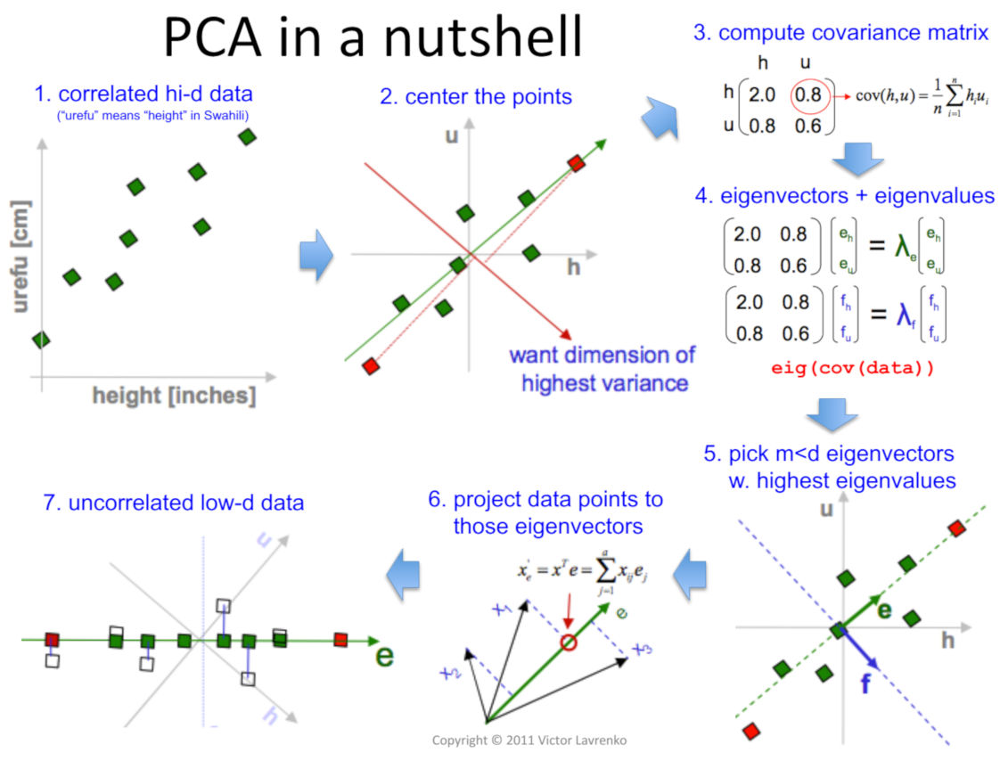
One common use of PCA is visualization.
If a dataset has 10 or 20 columns, we cannot easily plot it.
But PCA can reduce the data into 2 components and we are going to do exactly the same!
from sklearn import decomposition
pca = decomposition.PCA(n_components=2, whiten=True)
pca_results = pca.fit_transform(df_clustering_std[features_to_explore])
explained_variance = pca.explained_variance_ratio_
cumulative_variance = np.cumsum(explained_variance)
print(f"Comulative Variance: {cumulative_variance}")
explained_varianceComulative Variance: [0.21982537 0.40991447]array([0.21982537, 0.1900891 ])40% of the variance is explaned by two columns!
df_clustering_std['x'] = pca_results[:,0]
df_clustering_std['y'] = pca_results[:,1]
df_clustering_std.head()| user_location_city | duration | days_in_advance | orig_destination_distance | is_mobile | is_package | srch_adults_cnt | srch_children_cnt | srch_rm_cnt | cluster | x | y | |
|---|---|---|---|---|---|---|---|---|---|---|---|---|
| 0 | 0 | -0.685258 | 0.447140 | 0.314747 | -0.619979 | -0.023150 | -0.511139 | -0.704997 | -0.331661 | 2 | 0.095833 | -0.521284 |
| 2 | 3 | 0.564013 | 0.651185 | 1.020233 | -0.347544 | 0.125553 | -0.207376 | 0.201429 | -0.331661 | 1 | 0.929255 | -0.156800 |
| 3 | 7 | 5.164984 | -0.007237 | 2.600430 | -0.619979 | 2.504801 | -0.113910 | -0.704997 | -0.331661 | 0 | 3.937174 | -0.238704 |
| 5 | 14 | 1.752343 | -0.500401 | 2.195332 | -0.619979 | -0.865800 | -0.113910 | 0.739619 | -0.331661 | 1 | 1.051649 | -0.087671 |
| 8 | 21 | 0.777303 | -0.594601 | 0.221515 | -0.619979 | 0.819500 | -0.908368 | 1.221158 | -0.331661 | 0 | 0.425947 | -0.558020 |
Now we can visualize thos cluseters!
plt.scatter(df_clustering_std['x'], df_clustering_std['y'], c=df_clustering_std['cluster'])
plt.show()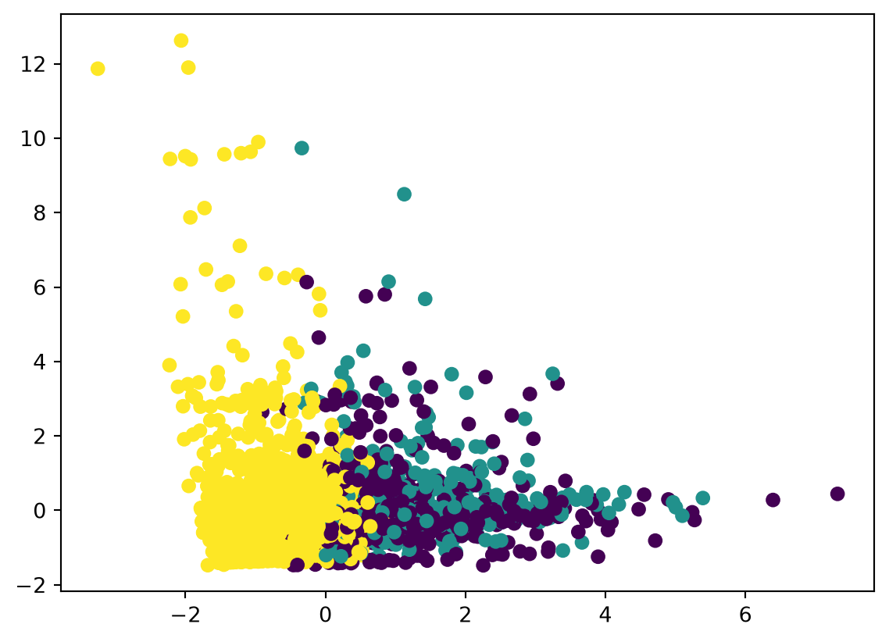
with 2 clusters
km = KMeans(n_clusters=2, max_iter=300, random_state=None)
df_clustering_std['cluster'] = km.fit_predict(df_clustering_std[features_to_explore])
pca = decomposition.PCA(n_components=2, whiten=True)
pca_results = pca.fit_transform(df_clustering_std[features_to_explore])
df_clustering_std['x'] = pca_results[:,0]
df_clustering_std['y'] = pca_results[:,1]
plt.scatter(df_clustering_std['x'], df_clustering_std['y'], c=df_clustering_std['cluster'])
plt.show()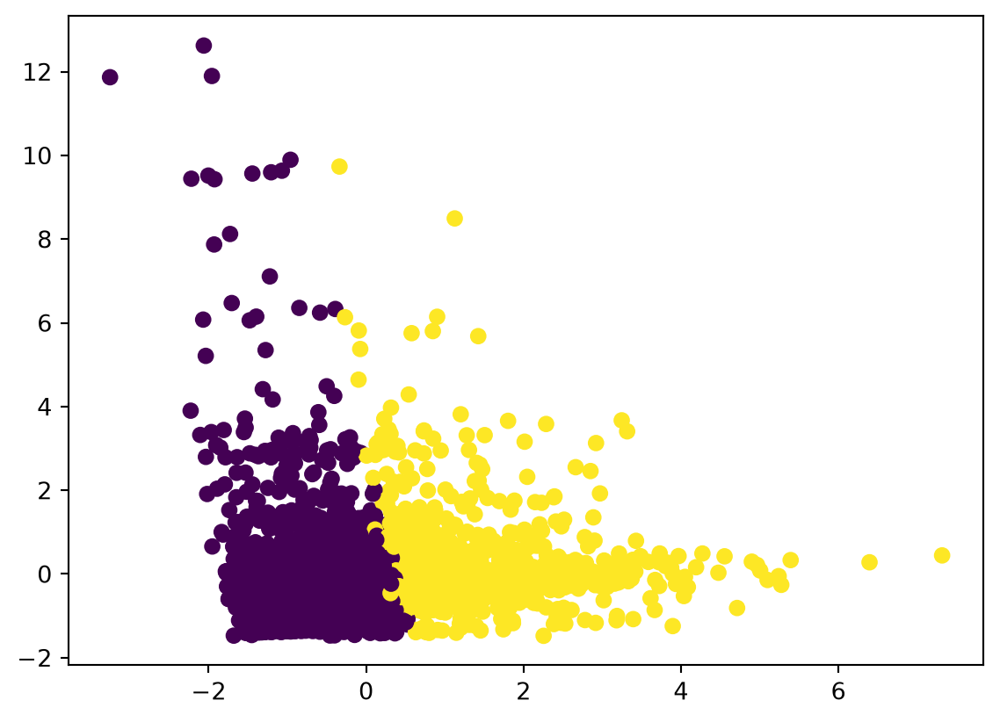
with 4 clusters
km = KMeans(n_clusters=4, max_iter=300, random_state=None)
df_clustering_std['cluster'] = km.fit_predict(df_clustering_std[features_to_explore])
pca = decomposition.PCA(n_components=2, whiten=True)
pca_results = pca.fit_transform(df_clustering_std[features_to_explore])
df_clustering_std['x'] = pca_results[:,0]
df_clustering_std['y'] = pca_results[:,1]
plt.scatter(df_clustering_std['x'], df_clustering_std['y'], c=df_clustering_std['cluster'])
plt.show()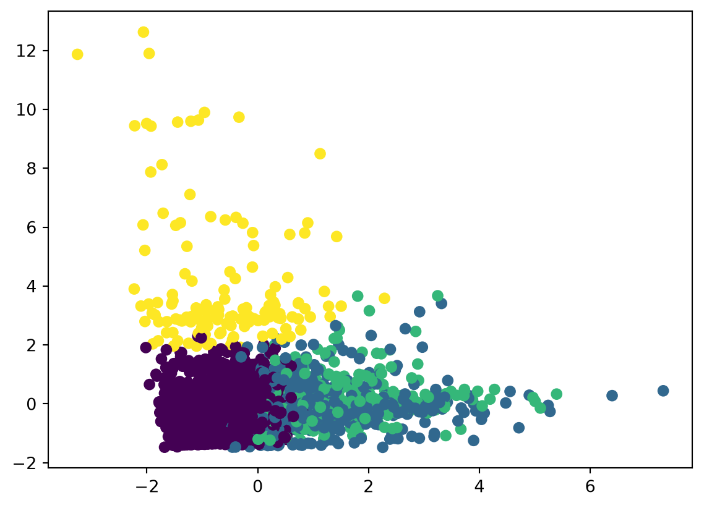